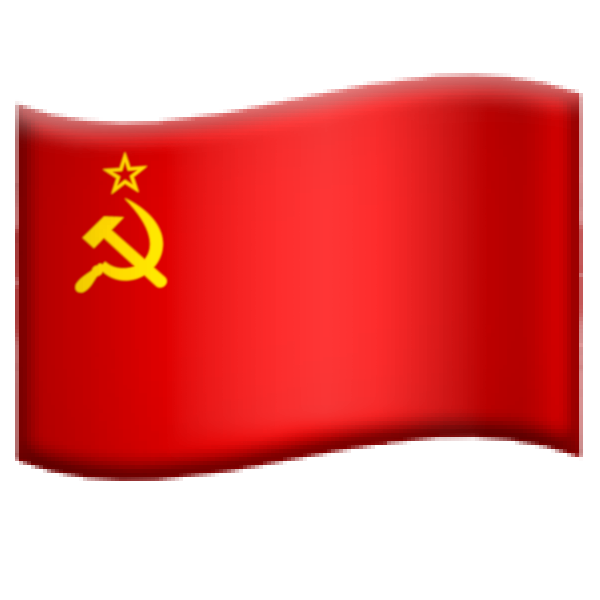
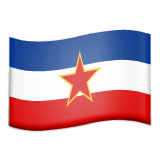

🎆 Independence
1581 🇳🇱 🇪🇸 Netherlands
1776 🇺🇸 🇬🇧 United States
1819 🇨🇴 🇪🇸 Colombia
1822 🇬🇷 🇹🇷 Greece Ottoman Empire
1830 🇧🇪 🇳🇱 Belgium
1836 🇲🇽 🇪🇸 Mexico
1838 🇨🇷 🇳🇮 Costa Rica Federal Republic of Central America
1844 🇩🇴 🇭🇹 Dominican Republic
1861 🇲🇨 🇫🇷 Monaco
1866 🇱🇮 🇩🇪 Liechtenstein
1877 🇷🇴 🇹🇷 Romania Ottoman Empire
1890 🇱🇺 🇳🇱 Luxembourg
1904 🇵🇦 🇪🇸 Panama
1908 🇧🇬 🇹🇷 Bulgaria Ottoman Empire
1917 🇫🇮 🇷🇺 Finland
1918 🇮🇸 🇩🇰 Iceland
1922 🇪🇬 🇬🇧 Egypt
1923 🇹🇷 🇹🇷 Türkiye Ottoman Empire
1929 🇻🇦 🇮🇹 Vatican City
1931 🇨🇦 🇬🇧 Canada
1931 🇮🇪 🇬🇧 Ireland
1941 🇪🇹 🇮🇹 Ethiopia
1944 🇵🇱 🇩🇪  Poland
1947 🇮🇳 🇬🇧 India
1948 🇮🇱 🇬🇧 Israel
1948 🇰🇷 🇺🇸 South Korea
1956 🇲🇦 🇫🇷 🇪🇸 Morocco
1960 🇧🇯 🇫🇷 Benin
1960 🇧🇫 🇫🇷 Burkina Faso
1960 🇲🇱 Mali Mali Federation
1960 🇳🇬 🇬🇧 Nigeria
1960 🇸🇳 Senegal Mali Federation
1960 🇹🇬 🇫🇷 Togo
1962 🇷🇼 🇧🇪 Rwanda
1962 🇺🇬 🇬🇧 Uganda
1963 🇰🇪 🇬🇧 Kenya
1965 🇬🇲 🇬🇧 Gambia
1971 🇦🇪 🇬🇧 United Arab Emirates
1975 🇨🇻 🇵🇹 Cape Verde
1980 🇻🇺 🇫🇷 🇬🇧 Vanuatu
1988 🇵🇸 🇮🇱 Palestine
1990 🇱🇻 Latvia
1991 🇭🇷  Croatia
1991 🇪🇪 Estonia
1991 🇲🇩 Moldova
1991 🇲🇰 North Macedonia
1991 🇷🇺 Russia
1991 🇸🇮 Slovenia
1991 🇺🇦 Ukraine
1992 🇧🇦 Bosnia and Herzegovina
1993 🇨🇿 🇨🇿 Czechia Czechoslovakia
1993 🇸🇰 🇨🇿 Slovakia Czechoslovakia
2006 🇲🇪 Montenegro
2006 🇷🇸 Serbia
1743 🇴🇲 Oman Afsharid Empire
1747 🇦🇫 Afghanistan Afsharid Empire
1752 🇰🇼 Kuwait Khalidi Emirate
1804 🇭🇹 🇫🇷 Haiti
1816 🇦🇷 🇪🇸 Argentina
1818 🇨🇱 🇪🇸 Chile
1825 🇧🇴 🇪🇸 Bolivia
1825 🇧🇷 🇵🇹 Brazil
1825 🇺🇾 🇧🇷 Uruguay
1830 🇪🇨 🇨🇴 Ecuador
1830 🇻🇪 🇨🇴 Venezuela
1839 🇬🇹 🇳🇮 Guatemala Federal Republic of Central America
1845 🇵🇾 🇧🇷 Paraguay
1847 🇱🇷 🇺🇸 Liberia
1898 🇸🇻 🇳🇮 El Salvador Greater Republic of Central America
1898 🇭🇳 🇳🇮 Honduras Greater Republic of Central America
1898 🇳🇮 🇳🇮 Nicaragua Greater Republic of Central America
1902 🇨🇺 🇺🇸 Cuba
1911 🇲🇳 🇨🇳 Mongolia
1912 🇦🇱 🇹🇷 Albania Ottoman Empire
1931 🇿🇦 🇬🇧 South Africa
1932 🇮🇶 🇬🇧 Iraq
1942 🇦🇺 🇬🇧 Australia
1943 🇱🇧 🇫🇷 Lebanon
1945 🇹🇼 🇯🇵 Taiwan
1946 🇵🇭 🇺🇸 Philippines
1947 🇳🇿 🇬🇧 New Zealand
1947 🇵🇰 🇬🇧 Pakistan
1948 🇲🇲 🇬🇧 Myanmar
1948 🇰🇵 North Korea
1948 🇱🇰 🇬🇧 Sri Lanka
1949 🇮🇩 🇳🇱 Indonesia
1951 🇱🇾 🇫🇷 🇬🇧 Libya
1953 🇰🇭 🇫🇷 Cambodia
1953 🇱🇦 🇫🇷 Laos
1956 🇸🇩 🇪🇬 🇬🇧 Sudan
1956 🇹🇳 🇫🇷 Tunisia
1957 🇬🇭 🇬🇧 Ghana
1957 🇲🇾 🇬🇧 Malaysia
1958 🇬🇳 🇫🇷 Guinea
1958 🇯🇴 🇵🇸 Jordan Arab Federation
1960 🇨🇫 🇫🇷 Central African Republic
1960 🇹🇩 🇫🇷 Chad
1960 🇨🇬 🇫🇷 Congo-Brazzaville
1960 🇨🇩 🇧🇪 Congo-Kinshasa
1960 🇨🇮 🇫🇷 Côte d’Ivoire
1960 🇨🇼 🇬🇧 Curaçao
1960 🇨🇾 🇬🇧 Cyprus
1960 🇬🇦 🇫🇷 Gabon
1960 🇲🇬 🇫🇷 Madagascar
1960 🇲🇷 🇫🇷 Mauritania
1960 🇳🇪 🇫🇷 Niger
1960 🇸🇴 🇮🇹 🇬🇧 Somalia
1961 🇨🇲 🇬🇧 Cameroon
1961 🇸🇱 🇬🇧 Sierra Leone
1961 🇸🇾 🇪🇬 Syria
1961 🇹🇿 🇬🇧 Tanzania
1962 🇩🇿 🇫🇷 Algeria
1962 🇧🇮 🇧🇪 Burundi
1962 🇯🇲 🇬🇧 Jamaica
1962 🇼🇸 🇳🇿 Samoa
1962 🇹🇹 🇬🇧 Trinidad and Tobago
1964 🇲🇼 🇬🇧 Malawi
1964 🇲🇹 🇬🇧 Malta
1964 🇿🇲 🇬🇧 Zambia
1965 🇨🇰 🇳🇿 Cook Islands
1965 🇲🇻 🇬🇧 Maldives
1965 🇸🇬 🇲🇾 Singapore
1966 🇧🇧 🇬🇧 Barbados
1966 🇧🇼 🇬🇧 Botswana
1966 🇬🇾 🇬🇧 Guyana
1966 🇱🇸 🇬🇧 Lesotho
1968 🇬🇶 🇪🇸 Equatorial Guinea
1968 🇸🇿 🇬🇧 Eswatini
1968 🇲🇺 🇬🇧 Mauritius
1968 🇳🇷 🇦🇺 Nauru
1970 🇫🇯 🇬🇧 Fiji
1970 🇹🇴 🇬🇧 Tonga
1971 🇧🇭 🇬🇧 Bahrain
1971 🇧🇩 🇵🇰 Bangladesh
1971 🇶🇦 🇬🇧 Qatar
1973 🇧🇸 🇬🇧 Bahamas
1973 🇬🇼 🇵🇹 Guinea-Bissau
1974 🇬🇩 🇬🇧 Grenada
1975 🇦🇴 🇵🇹 Angola
1975 🇰🇲 🇫🇷 Comoros
1975 🇲🇿 🇵🇹 Mozambique
1975 🇵🇬 🇦🇺 Papua New Guinea
1975 🇸🇹 🇵🇹 São Tomé and Príncipe
1975 🇸🇷 🇳🇱 Suriname
1976 🇸🇨 🇬🇧 Seychelles
1978 🇩🇯 🇬🇧 Djibouti
1978 🇩🇲 🇬🇧 Dominica
1978 🇸🇧 🇬🇧 Solomon Islands
1978 🇹🇻 🇬🇧 Tuvalu
1979 🇰🇮 🇬🇧 Kiribati
1979 🇱🇨 🇬🇧 Saint Lucia
1979 🇻🇨 🇬🇧 Saint Vincent and the Grenadines
1980 🇿🇼 🇬🇧 Zimbabwe
1981 🇦🇬 🇬🇧 Antigua and Barbuda
1981 🇧🇿 🇬🇧 Belize
1983 🇰🇳 🇬🇧 Saint Kitts and Nevis
1984 🇧🇳 🇬🇧 Brunei
1986 🇲🇭 🇺🇸 Marshall Islands
1986 🇫🇲 🇺🇸 Micronesia
1990 🇱🇹 Lithuania
1990 🇳🇦 🇿🇦 Namibia
1991 🇦🇲 Armenia
1991 🇦🇿 Azerbaijan
1991 🇧🇾 Belarus
1991 🇬🇪 Georgia
1991 🇰🇿 Kazakhstan
1991 🇰🇬 Kyrgyzstan
1991 🇹🇯 Tajikistan
1991 🇹🇲 Turkmenistan
1991 🇺🇿 Uzbekistan
1993 🇪🇷 🇪🇹 Eritrea
1994 🇵🇼 🇺🇸 Palau
2002 🇹🇱 🇮🇩 Timor-Leste
2008 🇽🇰 🇷🇸 Kosovo
2011 🇸🇸 🇸🇩 South Sudan